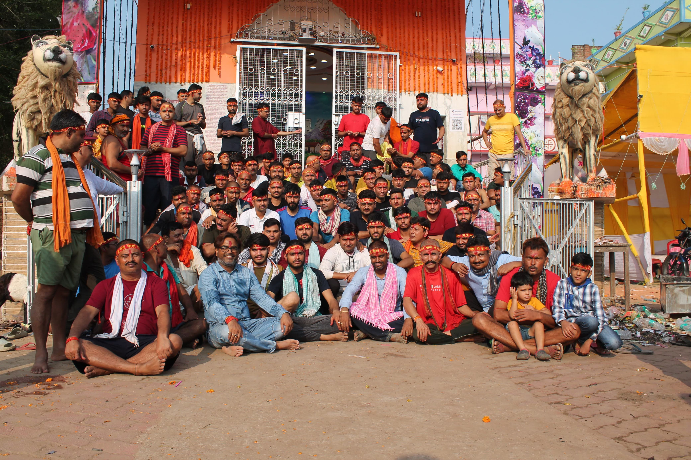

A Tradition of Faith & Celebration
Honouring Maa Durga’s Blessings
सरमेरा दुर्गा पूजा समिति की स्थापना सरमेरा गढ़ के प्रबुद्ध भूमिहार समाज एवं अन्य समान विचारधारा वाले व्यक्तियों के सामूहिक प्रयास से सन् 1937 में की गई थी। यह वह समय था जब देश स्वतंत्रता संग्राम की लहरों से आंदोलित था, और ऐसे काल में सांस्कृतिक चेतना को अक्षुण्ण बनाए रखना एक चुनौती थी। इस समिति की स्थापना, गढ़पत्ति परिवार के वरिष्ठ एवं प्रतिष्ठित सदस्यों के सशक्त नेतृत्व में हुई, जिनमें प्रमुख रूप से श्री रामशरण प्रसाद सिंह उर्फ तनिक बाबू, बाबू चक्रधर प्रसाद सिंह एवं बागेश्वरी प्रसाद सिंह शामिल थे....
Read More